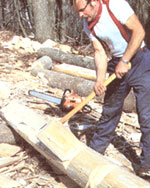

If the math, layout, and saw work have been accurate, corner notches should fit together tight and right. Minor adjustments can be made by running a handsaw between notch faces to remove excess wood.